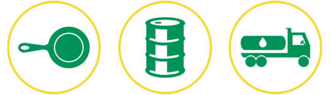
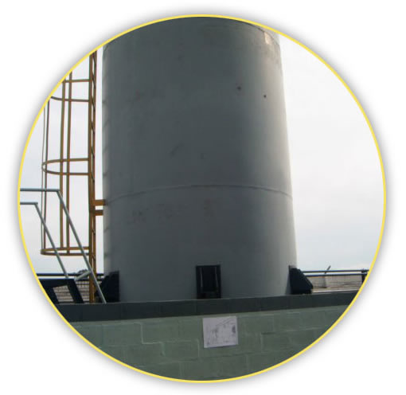

Quienes somos / Historia / Objetivos / como trabajamos
Sodir es una empresa dedicada al acopio selectivo de residuos de aceite comestible usado para reciclaje, constituyendo de esta manera un eslabón activo en el cuidado del medio ambiente.
Sodir está integrada al plan bio (resolución 1/8) del OPDS (Organismo Provincial Para el Desarrollo Sustentable) ya que trabaja de manera conjunta con *la* agrupación San Antonio que da destino final a los aceites recuperados y que también se encuentra inscripta como empresa elaboradora de biocombustibles y sus mezclas con gasoil y/o naftas según *la* resolución S.E. N° 419/98 del Ministerio de Planificación Federal, Inversión Pública y Servicios de la Secretaria de Energía.
